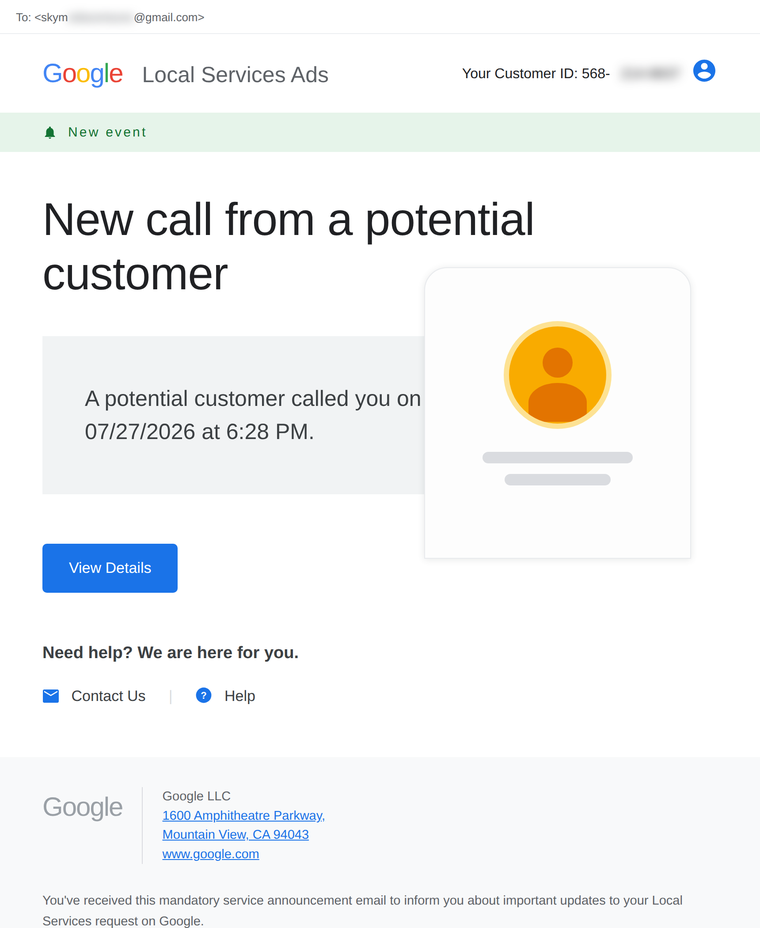
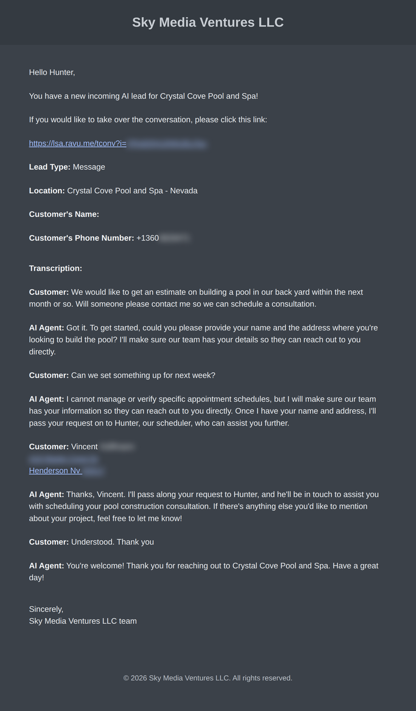

Google's default alert
Log in to find out

- No caller name, no phone number
- No idea what the customer actually needs
- Another login between you and the job
Every call · Every message · Every lead
The moment a Local Services Ads lead calls or messages, LSA Command emails and texts you the caller's phone number and extension, their name, and the full conversation — so you can call back while the job is still up for grabs. Google's built-in notification? "A potential customer called you." That's it.
Google's default alert
Log in to find out

The LSA Command alert
Everything, instantly

Speed to lead wins jobs. When the number is already in your hand, you're calling back in seconds — not after you find a laptop, log in, and dig. That's how our clients convert more of the leads they're already paying Google for.
Book a demoReal notifications from July 2026, shown side by side — lead details partially blurred for privacy. LSA Command alerts are white-labeled: the alert above carries one of our partner agencies' branding, and yours would carry yours.